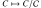
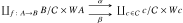

non è più solamente un insieme, quanto piuttosto un intero complesso di catene
non è più solamente un insieme, quanto piuttosto un intero complesso di catene  (quindi, in paricolare, un gruppo abeliano graduato) e tale per cui le mappe di composizione
(quindi, in paricolare, un gruppo abeliano graduato) e tale per cui le mappe di composizioneTutto quanto si svolgerà con queste modalità:
La teoria delle categorie arricchite affonda le radici nell’algebra omologica: il primo esempio di tale struttura fu introdotto e studiato da Kelly in [ref] e Eilenberg (per motivi non dissimili da quelli che portarono Grothendieck e Verdier a introdurre le categorie derivate) in [ref]. Scoperto tale interesse comune, Eilenberg e Kelly presero in considerazione strutture con lo stesso comportamento di una categoria, ma dove non è più solamente un insieme, quanto piuttosto un intero complesso di catene (quindi, in paricolare, un gruppo abeliano graduato) e tale per cui le mappe di composizione
sono mappe di catene (definendo opportunamente il prodotto tensoriale a dominio, e il grado della mappa secondo le regole dell’algebra omologica).
I due si resero però conto piuttosto in fretta che ben pochi dei risultati che saranno poi esposti in [laJolla] dipendono inerentemente dal fatto che gli sono complessi di catene; è sufficiente che tali oggetti appartengano a una categoria dove sia definita una operazione di moltiplicazione tra oggetti, in maniera debitamente coerente (si pensi ad esempio agli insiemi, agli spazi vettoriali, agli spazi topologici… dove sono definiti il prodotto cartesiano  -con una opportuna topologia prodotto, se
-con una opportuna topologia prodotto, se  sono spazi topologici- oppure il prodotto tensoriale di
sono spazi topologici- oppure il prodotto tensoriale di  -spazi vettoriali). Chiamiamo le categorie
-spazi vettoriali). Chiamiamo le categorie  con questa proprietà “categorie monoidali” (o dotate di una “struttura monoidale”), e preleviamo dalla classe degli oggetti di una sotto-classe di che si comportino in maniera formalmente analoga agli di una categoria, otteniamo oggetti che chiamiamo categorie arricchite sulla base .
con questa proprietà “categorie monoidali” (o dotate di una “struttura monoidale”), e preleviamo dalla classe degli oggetti di una sotto-classe di che si comportino in maniera formalmente analoga agli di una categoria, otteniamo oggetti che chiamiamo categorie arricchite sulla base .
È bene notare che, sebbene il caso in cui gli siano insiemi arricchiti di una struttura sia il più frequente nella pratica (e cioè il caso in cui, in particolare, la composizione  sia un omomorfismo rispetto alla struttura in questione: questo è il caso in cui gli sono gruppi abeliani, spazi vettoriali, complessi di catene, spazi topologici, etc.), questo non è necessario alla definizione generale.
sia un omomorfismo rispetto alla struttura in questione: questo è il caso in cui gli sono gruppi abeliani, spazi vettoriali, complessi di catene, spazi topologici, etc.), questo non è necessario alla definizione generale.
Il lavoro [laJolla] si occuperà di stabilire cosa sopravvive della teoria delle categorie classica (dove ) alla luce di questa osservazione; dallo studio di Eilenberg e Kelly (e da molte successive espansioni) emerge che la teoria si recupera pressoché nella sua totalità: esistono funtori arricchiti, trasformazioni naturali arricchite, co/limiti, prefasci, e un “lemma di Yoneda” in una opportuna forma che tiene conto della maggior struttura di un prefascio . È, allora, solo un caso molto particolare quello della teoria delle categorie basata su insiemi; molti risultati classici relativi a una categoria, o a una classe specifica di categorie, “vivono” in un mondo dove sugli hom-set è stata posta una struttura addizionale; molti altri sono naturalmente interpretabili in tal senso, piuttosto che come oggetti pertinenti alla teoria degli insiemi.
In tal senso, l’esempio di apertura è illuminante: la categoria dei complessi di catene è monoidale, rispetto al prodotto di due complessi che è definito dalla posizione
 Una categoria arricchita sui complessi di catene si dice una “DG-categoria” (categoria Differenziale Graduata), cosicché per specificare una DG-categoria, per ogni terna di oggetti, e ad ogni grado fissato va specificata una famiglia di mappe bilineari ; ciascuna di queste famiglie va a formare la componente -esima di una mappa di catene ; e questa descrizione parla solo delle mappe di grado zero…
Una categoria arricchita sui complessi di catene si dice una “DG-categoria” (categoria Differenziale Graduata), cosicché per specificare una DG-categoria, per ogni terna di oggetti, e ad ogni grado fissato va specificata una famiglia di mappe bilineari ; ciascuna di queste famiglie va a formare la componente -esima di una mappa di catene ; e questa descrizione parla solo delle mappe di grado zero…
Appare evidente che una tale interpretazione puramente insiemistica della struttura fortemente annidata delle mappe di composizione è improponibile nel caso delle DG-categorie. Diventa allora fondamentale avere a disposizione un formalismo che incapsuli completamente questa complessità in un approccio formale; la struttura monoidale su  , dimostrata una e una sola volta, permette di trattare l’intera
, dimostrata una e una sola volta, permette di trattare l’intera  come un unico oggetto, e di derivare nuove proprietà da questa descrizione formale.
come un unico oggetto, e di derivare nuove proprietà da questa descrizione formale.
La teoria delle categorie arricchite è piuttosto vasta:
 ammette un “inverso” , il suo duale, in modo che esistano delle mappe
ammette un “inverso” , il suo duale, in modo che esistano delle mappe  e
e  soddisfacenti a opportune proprietà universali: questo si può astrarre a una richiesta analoga per ). Un resoconto molto utile e pieno di riferimenti che classifica la vasta zoologia di assiomi aggiuntivi da imporre a una categoria monoidale è [ref].
soddisfacenti a opportune proprietà universali: questo si può astrarre a una richiesta analoga per ). Un resoconto molto utile e pieno di riferimenti che classifica la vasta zoologia di assiomi aggiuntivi da imporre a una categoria monoidale è [ref]. -calcolo. Per non parlare poi dei topos elementari (particolari categorie cartesiane chiuse), delle varianti di spazi topologici, e spazi puntati…
-calcolo. Per non parlare poi dei topos elementari (particolari categorie cartesiane chiuse), delle varianti di spazi topologici, e spazi puntati… , la categoria delle sue rappresentazioni -lineari è monoidale, rispetto al prodotto
, la categoria delle sue rappresentazioni -lineari è monoidale, rispetto al prodotto  (se
(se  sono le due rappresentazioni); le proprietà della categoria si traducono in proprietà del gruppo , ed è un’ottima domanda la seguente: quali ipotesi su una categoria monoidale assicurano che esiste un gruppo tale per cui
sono le due rappresentazioni); le proprietà della categoria si traducono in proprietà del gruppo , ed è un’ottima domanda la seguente: quali ipotesi su una categoria monoidale assicurano che esiste un gruppo tale per cui  ?
?Definizione. Una categoria monoidale consta di una tupla in cui
; è un funtore detto moltiplicazione monoidale;
è un funtore detto moltiplicazione monoidale; è un oggetto detto unità monoidale;
è un oggetto detto unità monoidale; è una famiglia di isomorfismi naturale in tutti i suoi argomenti, è una famiglia di isomorfismi naturali ,
è una famiglia di isomorfismi naturale in tutti i suoi argomenti, è una famiglia di isomorfismi naturali ,  è una famiglia di isomorfismi naturali .
è una famiglia di isomorfismi naturali .Questi dati sono soggetti ai seguenti assiomi di coerenza:
 a
a  ; il primo assioma di coerenza asserisce che questi due modi coincidono.
; il primo assioma di coerenza asserisce che questi due modi coincidono.
si comporta coerentemente con l’intuizione che esso sia l’unità della moltiplicazione monoidale: Diversi di questi esempi sono già noti a chi conosca i rudimenti della teoria delle categorie: idealmente, tutti sono astrazioni successive dal primo esempio paradigmatico, quello della categoria degli insiemi.
Diversi di questi esempi sono già noti a chi conosca i rudimenti della teoria delle categorie: idealmente, tutti sono astrazioni successive dal primo esempio paradigmatico, quello della categoria degli insiemi.
Esempio (la categoria degli insiemi). La categoria  di insiemi e funzioni è monoidale rispetto al funtore
di insiemi e funzioni è monoidale rispetto al funtore  che manda in . L’associatività è data dall’isomorfismo canonico (entrambi gli insiemi soddisfano la stessa proprietà universale) e l’oggetto unità è l’(ogni scelta di un) insieme terminale. La struttura monoidale così determinata è simmetrica, ossia
che manda in . L’associatività è data dall’isomorfismo canonico (entrambi gli insiemi soddisfano la stessa proprietà universale) e l’oggetto unità è l’(ogni scelta di un) insieme terminale. La struttura monoidale così determinata è simmetrica, ossia  con un isomorfismo naturale nei due argomenti.
con un isomorfismo naturale nei due argomenti.
Definizione (categoria monoidale simmetrica). Una categoria monoidale si dice simmetrica quando oltre alla struttura monoidale  essa è dotata di una famiglia di intrecciamenti
essa è dotata di una famiglia di intrecciamenti  uno per ogni coppia di oggetti, che soddisfa al seguente assioma esagonale di coerenza:
uno per ogni coppia di oggetti, che soddisfa al seguente assioma esagonale di coerenza:
 e tale per cui
e tale per cui  .
.
Esempio (la categoria degli spazi topologici). La categoria di spazi topologici e funzioni continue è monoidale rispetto al funtore  che manda
che manda  nell’insieme dotato della topologia prodotto che ha per base la collezione dei sottoinsiemi al variare di . L’associatività è data dall’isomorfismo canonico (entrambi gli oggetti soddisfano la stessa proprietà universale) e l’oggetto unità è l’(ogni scelta di un) insieme terminale, con l’unica topologia possibile.
nell’insieme dotato della topologia prodotto che ha per base la collezione dei sottoinsiemi al variare di . L’associatività è data dall’isomorfismo canonico (entrambi gli oggetti soddisfano la stessa proprietà universale) e l’oggetto unità è l’(ogni scelta di un) insieme terminale, con l’unica topologia possibile.
Esempio (la categoria degli insiemi puntati). La categoria degli insiemi puntati ha per oggetti le coppie  dove
dove  è un elemento, e per morfismi quelle funzioni tali che
è un elemento, e per morfismi quelle funzioni tali che  . Definiamo in
. Definiamo in  l’operazione di somma puntata
l’operazione di somma puntata  come il pushout
come il pushout
Questa posizione definisce una struttura monoidale il cui oggetto unità è l’(ogni scelta di un)oggetto terminale. La proprietà universale di è ora la stessa di  , ciò che implica che i due oggetti sono tra loro isomorfi.
, ciò che implica che i due oggetti sono tra loro isomorfi.
Esempio (ogni categoria co/cartesiana). Risulta chiaro come estendere questo esempio ad ogni categoria  con limiti finiti, dove
con limiti finiti, dove  è l’aggiunto destro al funtore diagonale
è l’aggiunto destro al funtore diagonale  che manda
che manda  in
in  . Dualizzando opportunamente questo risultato,
. Dualizzando opportunamente questo risultato,  diventa monoidale rispetto a , ovvero (equivalentemente) ogni con colimiti finiti diventa monoidale rispetto al coprodotto
diventa monoidale rispetto a , ovvero (equivalentemente) ogni con colimiti finiti diventa monoidale rispetto al coprodotto  (l’aggiunto sinistro della diagonale ).
(l’aggiunto sinistro della diagonale ).
Data una categoria cartesiana , la categoria dei funtori eredita i limiti da (sono tutti calcolati puntualmente), e dunque è cartesiana; un caso molto speciale (che contiene tutti i dettagli istruttivi di quello generale) è il seguente.
Esempio (la categoria dei fasci di insiemi). Un prefascio di insiemi a valori in consta di un funtore  ; nel caso in cui sia la categoria degli aperti di uno spazio topologico
; nel caso in cui sia la categoria degli aperti di uno spazio topologico  , dove significa , possiamo definire un fascio come un prefascio tale per cui, in ogni diagramma del tipo
, dove significa , possiamo definire un fascio come un prefascio tale per cui, in ogni diagramma del tipo
dove sono gli elementi di un ricoprimento di  (confuso con la sua immagine in mediante l’embedding di Yoneda), esista un unica trasformazione naturale tale che . Da questa definizione è evidente che i fasci sono una sottocategoria chiusa per prodotti, che cioè se
(confuso con la sua immagine in mediante l’embedding di Yoneda), esista un unica trasformazione naturale tale che . Da questa definizione è evidente che i fasci sono una sottocategoria chiusa per prodotti, che cioè se  sono fasci lo è il prodotto
sono fasci lo è il prodotto  .
.
Diversi altri esempi, non meno elementari, risultano tutti come astrazioni successive da un primo esempio paradigmatico, quello degli spazi vettoriali (o meglio, degli -moduli su un anello).
Esempio (la categoria degli spazi vettoriali). (Ci riduciamo a spazi di dimensione finita; l’esempio è comunque istruttivo) Il prodotto tensoriale di due spazi vettoriali è lo spazio vettoriale definito dalla proprietà universale di rappresentare il funtore , ossia tale per cui le applicazioni bilineari corrispondano mediante un isomorfismo naturale alle mappe lineari
Vi sono metodi classici per dimostrare che un tale spazio esiste: si prenda, ad esempio,  e lo si quozienti per le relazioni indotte da , e da . Questa proprietà universale determina a meno di un unico isomorfismo; da ciò è relativamente semplice ricavare un unitore e un associatore (farlo esplicitamente è un esercizio). La struttura così determinata è simmetrica (ancora una volta la proprietà universale).
e lo si quozienti per le relazioni indotte da , e da . Questa proprietà universale determina a meno di un unico isomorfismo; da ciò è relativamente semplice ricavare un unitore e un associatore (farlo esplicitamente è un esercizio). La struttura così determinata è simmetrica (ancora una volta la proprietà universale).
Lemma. Esiste un isomorfismo
 naturale in tutti i suoi argomenti. In altre parole, per ogni oggetto i funtori
naturale in tutti i suoi argomenti. In altre parole, per ogni oggetto i funtori  e sono aggiunti (equivalentemente, definisce una aggiunzione parametrica nel senso di [Mac Lane, ???]).
e sono aggiunti (equivalentemente, definisce una aggiunzione parametrica nel senso di [Mac Lane, ???]).
Dimostrazione. Definiamo unità e counità dell’aggiunzione; verificare le identità triangolari è un esercizio noioso.
 e manda il vettore nella mappa lineare che manda
e manda il vettore nella mappa lineare che manda  in
in  ;
; in
in  .
.Proposizione. Il prodotto monoidale di  è cocontinuo, ossia vale l’isomorfismo
è cocontinuo, ossia vale l’isomorfismo
 Dimostrazione. Ovvia in virtù del Lemma precedente.
Dimostrazione. Ovvia in virtù del Lemma precedente.
Esempio (la categoria dei moduli graduati). Un modulo graduato su un anello consta di una famiglia numerabile di -moduli ; una mappa di moduli graduati consta di una famiglia di omomorfismi di -moduli. Questa posizione definisce la categoria degli -moduli graduati  . La categoria dei moduli graduati è dotata di un prodotto monoidale
. La categoria dei moduli graduati è dotata di un prodotto monoidale  definito dalla seguente catena di osservazioni:
definito dalla seguente catena di osservazioni:
 nel modulo graduato che ha al grado
nel modulo graduato che ha al grado  e zero altrove; la struttura monoidale che cerchiamo estende nel senso ovvio, quella che si trova su alla stessa maniera degli spazi vettoriali.
e zero altrove; la struttura monoidale che cerchiamo estende nel senso ovvio, quella che si trova su alla stessa maniera degli spazi vettoriali.In virtù del lemma precedente, la catena di isomorfismi

ha senso, e questo determina univocamente la componente di grado di  come
come  .
.
Esempio (la categoria dei complessi di catene). Un modulo differenziale graduato o complesso di catene consta di un oggetto di dotato di mappe
dette differenziali del complesso, tali che per ogni si abbia  ; questo implica che contiene l’immagine di
; questo implica che contiene l’immagine di  , e permette di definire l’omologia del complesso come il quoziente . Il modulo graduato
, e permette di definire l’omologia del complesso come il quoziente . Il modulo graduato  ottenuto da due complessi di catene, riguardati come oggetti di , ottiene una naturale struttura di complesso di catene ponendo il differenziale
ottenuto da due complessi di catene, riguardati come oggetti di , ottiene una naturale struttura di complesso di catene ponendo il differenziale  .
.
È un’ottima domanda (difficile, e non molto pertinente al nostro discorso) come poter calcolare l’omologia di a partire da quella di e di separatamente. Invece di concentrarsi su questa domanda, però, preferiamo presentare un esempio legato a quelli precedenti, ma leggermente patologico: quello degli spazi di Banach reali.
Definizione (categoria degli spazi di Banach). La categoria  ha per oggetti gli spazi di Banach (spazi vettoriali reali normati e completi rispetto alla norma), e per morfismi le mappe lineari. È però un fatto noto che affinché una tale mappa lineare sia continua, rispetto alle topologie naturali che sono indotte sugli spazi di Banach, questa deve essere limitata, ossia deve essere
ha per oggetti gli spazi di Banach (spazi vettoriali reali normati e completi rispetto alla norma), e per morfismi le mappe lineari. È però un fatto noto che affinché una tale mappa lineare sia continua, rispetto alle topologie naturali che sono indotte sugli spazi di Banach, questa deve essere limitata, ossia deve essere  . Ciò porta alla definizione più naturale della categoria che ha per oggetti gli spazi di Banach e per morfismi le mappe lineari corte, cioè quelle per cui .
. Ciò porta alla definizione più naturale della categoria che ha per oggetti gli spazi di Banach e per morfismi le mappe lineari corte, cioè quelle per cui .
Ora, costruire strutture monoidali su spazi vettoriali topologici non è semplicissimo, perché spesso e volentieri (sempre in dimensione infinita) il prodotto tensoriale algebrico  non ha alcun riguardo della topologia che esisteva su ; vi sono tuttavia due definizioni standard, ottenute completando opportune norme su .
non ha alcun riguardo della topologia che esisteva su ; vi sono tuttavia due definizioni standard, ottenute completando opportune norme su .
Definizione (prodotto tensoriale proiettivo e iniettivo). Dati due spazi di Banach osserviamo anzitutto che ogni elemento di si scrive in maniera unica come una combinazione lineare quasi ovunque finita  ; ora, dato un tale elemento definiamo la sua norma proiettiva come
; ora, dato un tale elemento definiamo la sua norma proiettiva come
 dove
dove  è l’insieme di tutte le scritture
è l’insieme di tutte le scritture  che danno -non sono uniche!; dualmente, se
che danno -non sono uniche!; dualmente, se  sono funzionali lineari rispettivamente, allora
sono funzionali lineari rispettivamente, allora  è un funzionale sul prodotto tensoriale
è un funzionale sul prodotto tensoriale  . Definiamo, dato , la norma iniettiva di come
. Definiamo, dato , la norma iniettiva di come
 dove
dove  . Il prodotto tensoriale proiettivo è definito come il completamento dello spazio normato , laddove il prodotto tensoriale iniettivo
. Il prodotto tensoriale proiettivo è definito come il completamento dello spazio normato , laddove il prodotto tensoriale iniettivo  è definito come il completamento dello spazio normato
è definito come il completamento dello spazio normato
Proposizione. La tupla  è una categoria monoidale, dotata delle coerenze ovvie ereditate da quelle di .
è una categoria monoidale, dotata delle coerenze ovvie ereditate da quelle di .
Dimostrazione. Omessa. esiste in quanto oggetto di è ovvia; resta da dimostrare che gli associatori e unitori ereditati da sono effettivamente mappe in .
Proposizione. coincide con la palla unitaria di , ossia col sottospazio topologico dei vettori tali che .
Dimostrazione. Esiste un isomorfismo di spazi vettoriali  indotto dalla mappa
indotto dalla mappa  ; è tuttavia facile notare che questo isomorfismo induce per trasporto di topologie un omeomorfismo con , e che corrisponde al sottospazio di dei vettori
; è tuttavia facile notare che questo isomorfismo induce per trasporto di topologie un omeomorfismo con , e che corrisponde al sottospazio di dei vettori  (l’isomorfismo è isometrico nelle norme). Questa è esattamente la palla unitaria di .
(l’isomorfismo è isometrico nelle norme). Questa è esattamente la palla unitaria di .
Due esempi a loro stanti meritano una certa attenzione:
Esempio (Endofuntori di  ). Se è una qualsiasi categoria, possiamo considerare (eventualmente in un universo più grande) la categoria
). Se è una qualsiasi categoria, possiamo considerare (eventualmente in un universo più grande) la categoria  degli endofuntori di , che ha per morfismi le trasformazioni naturali. Questa categoria ha una struttura monoidale data dalla composizione di funtori, per cui l’oggetto unità è il funtore identico. Ovviamente, la coerenza data dall’associatore e dagli unitori è una vacuità, dato che la composizione di funtori
degli endofuntori di , che ha per morfismi le trasformazioni naturali. Questa categoria ha una struttura monoidale data dalla composizione di funtori, per cui l’oggetto unità è il funtore identico. Ovviamente, la coerenza data dall’associatore e dagli unitori è una vacuità, dato che la composizione di funtori  è strettamente associativa e unitaria.
è strettamente associativa e unitaria.
Definizione (categoria monoidale stretta). In tali circostanze (quando cioè non è solo isomorfo a , ma è proprio lo stesso oggetto, e lo stesso accade per  ) la categoria monoidale si dice stretta.
) la categoria monoidale si dice stretta.
Un altro esempio di categoria monoidale stretta è dato dall’insieme dei numeri reali non negativi, possibilmente infiniti, denotato per brevità  .
.
Esempio (L’esempio dei numeri reali). La categoria (dove esiste un morfismo se e solo se ) su definita ha una struttura di categoria monoidale stretta, rispetto alla somma di numeri reali; la struttura è evidentemente simmetrica e stretta.
Definizione (Categoria monoidale chiusa). Una categoria monoidale si dice chiusa quando ciascun endofuntore ha un aggiunto destro  . Questo realizza l’isomorfismo
. Questo realizza l’isomorfismo
Esempi. La categoria degli insiemi, degli insiemi puntati, degli spazi vettoriali, dei moduli graduati e sono tutte chiuse:
, è l’insieme delle funzioni  , è l’insieme delle funzioni per cui , e questo insieme ha come punto privilegiato la funzione costante in .,
, è l’insieme delle funzioni per cui , e questo insieme ha come punto privilegiato la funzione costante in .,  è il modulo graduato
è il modulo graduato  ; in caso siano dei complessi di catene, il differenziale agisce come . definiamo
; in caso siano dei complessi di catene, il differenziale agisce come . definiamo  (chiaramente non possiamo usare
(chiaramente non possiamo usare  …) come (verificare che questa è davvero una chiusura: a cosa si riduce l’isomorfismo della definizione?).
…) come (verificare che questa è davvero una chiusura: a cosa si riduce l’isomorfismo della definizione?).Abbiamo ora raccolto una quantità di esempi sufficiente a introdurre l’oggetto di questo primo capitolo: le categorie arricchite su una categoria monoidale.
Definizione (-categoria). Una categoria arricchita sulla base monoidale , o brevemente una -categoria , consta di
 ;
; per ogni coppia di oggetti
per ogni coppia di oggetti  ;
; , una per ogni terna di oggetti di ;
, una per ogni terna di oggetti di ; , una per ogni oggetto di .
, una per ogni oggetto di .Questi dati sono soggetti agli assiomi seguenti:
La composizione è associativa, tramite l’associatore di ; ossia il diagramma
è commutativo.
La composizione ha le come identità, ossia i due diagrammi
 sono commutativi.
sono commutativi.
Osservazione. La definizione non ne ha bisogno, ma i nostri esempi di elezione coinvolgeranno sempre categorie monoidali simmetriche e chiuse, e molto spesso anche dotate di tutti i limiti e i colimiti.
Esempio (la categoria ). È un ottimo esercizio mostrare che la categoria delle  -categorie (quando è considerata con la sua struttura cartesiana su menzionata) coincide con la categoria : un -funtore è precisamente un funtore tra categorie (dove ogni
-categorie (quando è considerata con la sua struttura cartesiana su menzionata) coincide con la categoria : un -funtore è precisamente un funtore tra categorie (dove ogni  è un insieme), e una trasformazione -naturale è precisamente una trasformazione naturale.
è un insieme), e una trasformazione -naturale è precisamente una trasformazione naturale.
Esempio (la categoria  ). La categoria delle categorie preadditive coincide con la categoria delle -categorie, dove ogni
). La categoria delle categorie preadditive coincide con la categoria delle -categorie, dove ogni  è un gruppo abeliano; è un fatto interessante e classico (vedi ad esempio [Freyd]) che ipotesi addizionali di completezza su inducano naturalmente un -arricchimento canonico.
è un gruppo abeliano; è un fatto interessante e classico (vedi ad esempio [Freyd]) che ipotesi addizionali di completezza su inducano naturalmente un -arricchimento canonico.
Esempio (la categoria  ). Questo è l’esempio con cui abbiamo iniziato l’introduzione. In una DG-categoria ogni è un complesso di catene; la composizione è una mappa di catene
). Questo è l’esempio con cui abbiamo iniziato l’introduzione. In una DG-categoria ogni è un complesso di catene; la composizione è una mappa di catene  definita dal dominio
definita dal dominio  .
.
Esempio (la categoria degli spazi metrici generalizzati). Una categoria (piccola) arricchita su  , seguendo la definizione, è un insieme su cui è definita una funzione
, seguendo la definizione, è un insieme su cui è definita una funzione  tale per cui e
tale per cui e  . A meno della simmetria, e del fatto che è possibile
. A meno della simmetria, e del fatto che è possibile  , questo è esattamente uno spazio metrico (tali generalizzazioni si dicono infatti spazi metrici generalizzati).
, questo è esattamente uno spazio metrico (tali generalizzazioni si dicono infatti spazi metrici generalizzati).
Segretamente, questo è l’esempio che motiva questa introduzione.
Esempio (la categoria  ). La categoria è cartesiana, rispetto al prodotto di categorie; questa struttura monoidale può essere usata per considerare categorie arricchite in , dove cioè ogni è una categoria, e composizione
). La categoria è cartesiana, rispetto al prodotto di categorie; questa struttura monoidale può essere usata per considerare categorie arricchite in , dove cioè ogni è una categoria, e composizione  e identità sono funtori.
e identità sono funtori.
Una categoria arricchita in si indica brevemente con il nome 2-categoria (stretta: ma ignoriamo questo aggettivo per il momento). L’obiettivo delle lezioni successive sarà uno studio ragionato di questa particolare categoria.
Questa procedura si presta a una definizione induttiva: per ogni  , esiste una “categoria delle categorie arricchite in -categorie”, detta categoria delle -categorie (strette, ma ignoriamo questo aggettivo) .
, esiste una “categoria delle categorie arricchite in -categorie”, detta categoria delle -categorie (strette, ma ignoriamo questo aggettivo) .
Il fatto che, con la scelta di come la categoria dei funtori  , diventi una 2-categoria
, diventi una 2-categoria  porta alla seguente
porta alla seguente
Proposizione. Se è monoidale chiusa, essa si può sempre considerare come categoria arricchita su sé stessa; la indichiamo , e è dato dall’hom interno . Gli assiomi di -categoria sono immediatamente verificati.
Definiamo ora la nozione di funtore tra -categorie; si tratta di una astrazione della definizione classica, che rende evidente il rifiuto (o l’impossibilità) di fare ricorso a nozioni di teoria degli insiemi: un -funtore, ora, non è più determinato da una funzione sui morfismi, ma da una famiglia di morfismi di , uno per ogni coppia di oggetti di , che soddisfa determinati assiomi.
Definizione (-funtore). Fissate una coppia di -categorie  un -funtore
un -funtore  consiste di una funzione di classe e di una famiglia
consiste di una funzione di classe e di una famiglia  tale che i diagrammi
tale che i diagrammi
 siamo commutativi. Diciamo che un tale è pienamente fedele quando tutti i sono isomorfismi in ; è questo il caso quando (ad esempio)
siamo commutativi. Diciamo che un tale è pienamente fedele quando tutti i sono isomorfismi in ; è questo il caso quando (ad esempio)  è l’inclusione di una sottoclasse
è l’inclusione di una sottoclasse  .
.
Osservazione. I -funtori si possono comporre; esiste una definizione di “-funtore identico” per cui  diventa una categoria.
diventa una categoria.
È tuttavia possibile rendere la collezione dei -funtori più di un insieme: la prossima definizione si occupa di ciò.
Definizione (-trasformazione naturale). Fissati due -funtori diciamo -trasformazione naturale una famiglia di morfismi di  tali che il diagramma
tali che il diagramma
È possibile definire
-naturali , definita con componenti  -naturali , definita dal diagramma commutativo
-naturali , definita dal diagramma commutativo 
È evidente che la strategia con cui queste definizioni sono state presentate vuole suggerire che stiamo tentando di riprodurre la struttura della categoria che raccoglie tutte le categorie, e dove ogni  è una categoria (i cui oggetti sono i funtori e i cui morfismi sono le trasformazioni naturali ). Questo è un atto volontario: l’oggetto di questo corso è in un certo senso lo studio delle -categorie, ossia della totalità delle strutture che condividono questa stessa proprietà con .
è una categoria (i cui oggetti sono i funtori e i cui morfismi sono le trasformazioni naturali ). Questo è un atto volontario: l’oggetto di questo corso è in un certo senso lo studio delle -categorie, ossia della totalità delle strutture che condividono questa stessa proprietà con .
Resta inteso, allora, che il nostro esempio base di 2-categoria (quello ciò a cui cercheremo di riportare ogni nuova nozione che introduciamo, lungo la discussione) è allora quello delle -categorie.
La prossima sottosezione ha lo scopo di rendere precisa, ed estendere, questa osservazione informale.
Una caratteristica essenziale della categoria è quella di essere cartesiana: avendo limiti finiti (e in effetti, limiti di ogni cardinalità) definisce una struttura monoidale cartesiana, dove è il prodotto di categorie, cioè la categoria che ha per oggetti la classe prodotto e per morfismi il prodotto cartesiano  di insiemi. In più, esiste una categoria di funtori che rende vero l’isomorfismo naturale
di insiemi. In più, esiste una categoria di funtori che rende vero l’isomorfismo naturale
 È evidente che nel gergo introdotto in questa sezione, è una categoria (cartesiana) monoidale chiusa. Ci proponiamo di dimostrare che questo vale in generale per ogni altra .
È evidente che nel gergo introdotto in questa sezione, è una categoria (cartesiana) monoidale chiusa. Ci proponiamo di dimostrare che questo vale in generale per ogni altra .
Proposizione. La categoria delle -categorie ha una struttura monoidale.
Dimostrazione. Date due -categorie definiamo  come la -categoria con per oggetti, e dove (il prodotto monoidale di ); composizione e identità sono definite di conseguenza. Dalla validità degli assiomi di associatività e identità per segue che è una -categoria.
come la -categoria con per oggetti, e dove (il prodotto monoidale di ); composizione e identità sono definite di conseguenza. Dalla validità degli assiomi di associatività e identità per segue che è una -categoria.
La -categoria , “libera” sulla categoria terminale, che ha un solo oggetto e tale per cui  , fa da oggetto unità. Associatori e unitori seguono dalla presenza degli associatori e unitori in .
, fa da oggetto unità. Associatori e unitori seguono dalla presenza degli associatori e unitori in .
Osservazione. Per dimostrare che questa struttura monoidale è chiusa, non è sufficiente invocare la definizione di -trasformazione naturale: se è vero che  ha un candidato naturale per classe degli oggetti, è ugualmente vero che deve essere un oggetto di , e non solo l’insieme delle trasformazioni -naturali tra funtori .
ha un candidato naturale per classe degli oggetti, è ugualmente vero che deve essere un oggetto di , e non solo l’insieme delle trasformazioni -naturali tra funtori .
È tuttavia vero che
Proposizione. Se è una fissata categoria monoidale, la classe delle -categorie, -funtori e trasformazioni -naturali diventa una -categoria.
Dimostrazione. Esercizio.
Una procedura standard per confrontare categorie arricchite su basi diverse è sfruttare una aggiunzione tra le basi di arricchimento e indurre una analoga aggiunzione tra le -categorie e le  -categorie. Per introdurre questa nozione abbiamo bisogno della
-categorie. Per introdurre questa nozione abbiamo bisogno della
Definizione (funtore monoidale). Date due categorie monoidali  un funtore monoidale
un funtore monoidale  consta di una funzione di classe tra le categorie
consta di una funzione di classe tra le categorie  e di
e di
 naturali nei due argomenti;
naturali nei due argomenti;
tali che i seguenti assiomi siano soddisfatti
 : il diagramma
: il diagramma  è commutativo (questo attesta che i due modi distinti di passare da
è commutativo (questo attesta che i due modi distinti di passare da  a
a  coincidono).
coincidono). : i due diagrammi sono commutativi (questo attesta che i due modi distinti di passare da a
: i due diagrammi sono commutativi (questo attesta che i due modi distinti di passare da a  coincidono).
coincidono).Osservazione. Questa definizione è ciò che in letteratura si dice funtore monoidale forte; esistono restrizioni e rilassamenti di tale nozione,
 e .
e .Non ci preoccupiamo di ispezionare queste definizioni; sebbene il caso veramente generale sia quello di un funtore co/lasco ci limitiamo al caso in cui , nella definizione seguente, sia forte.
Definizione (cambio di base). Dato un funtore monoidale  tra categorie monoidali definiamo il cambio di base mediante come il funtore
tra categorie monoidali definiamo il cambio di base mediante come il funtore  che manda una -categoria nella -categoria
che manda una -categoria nella -categoria  che ha gli stessi oggetti, e dove
che ha gli stessi oggetti, e dove  .
.
Esempio (la 2-categoria associata a una categoria simpliciale). Se è una categoria simpliciale, il funtore definisce un cambio di base che manda una categoria simpliciale in una 2-categoria “naturalmente” associata ad essa.
Esempio (la categoria sottostante a una -categoria). Il funtore  definisce un cambio di base
definisce un cambio di base  che manda una -categoria nella categoria che ha gli stessi oggetti, e dove è stato declassato all’insieme .
che manda una -categoria nella categoria che ha gli stessi oggetti, e dove è stato declassato all’insieme .
Iniziamo con un esempio semplice. La categoria degli insiemi, come visto nella lezione precedente, è cartesiana chiusa. Vale ciò l’isomorfismo
e l’aggiunzione così determinata ha per unità la mappa  e per counità la mappa definite rispettivamente dalle posizioni
e per counità la mappa definite rispettivamente dalle posizioni
 E’ immediato vedere che
E’ immediato vedere che  sono naturali nell’argomento e nell’argomento
sono naturali nell’argomento e nell’argomento  rispettivamente; ma per quanto riguarda l’altro argomento, a valere è un isomorfismo meno ovvio, che ricorda la naturalità ma che non vi è proprio uguale.
rispettivamente; ma per quanto riguarda l’altro argomento, a valere è un isomorfismo meno ovvio, che ricorda la naturalità ma che non vi è proprio uguale.
Proposizione. I diagrammi
sono commutativi, per ogni .
Dimostrazione. Immediata.
Un quadrato come quello riempito da  si dice un quadrato di cocuneo, mentre uno come quello riempito da
si dice un quadrato di cocuneo, mentre uno come quello riempito da  si dice un quadrato di cuneo. I due sono esempi particolari della seguente nozione.
si dice un quadrato di cuneo. I due sono esempi particolari della seguente nozione.
Definizione (trasformazione dinaturale). Dati due funtori paralleli  diciamo trasformazione dinaturale tra
diciamo trasformazione dinaturale tra  e
e  , denotata , una famiglia di morfismi di ,
, denotata , una famiglia di morfismi di ,  tali che il seguente diagramma sia commutativo
tali che il seguente diagramma sia commutativo 
Osservazione. Idealmente, una trasformazione dinaturale è il “dato necessario” per riempire il diagramma
generato dall’azione mista controvariante-covariante di sui morfismi.
Ora, un cuneo sarà una trasformazione dinaturale dal funtore costante; se è invece il codominio a essere costante, la trasformazione dinaturale sarà detta un cocuneo.
Definizione (co/cuneo). Un cuneo per consta di una trasformazione dinaturale ( è la base del cuneo), ossia di una famiglia di morfismi tali che per ogni sia commutativo il diagramma
Dualmente, un cocuneo per consta di una trasformazione dinaturale  ( è la punta del cocuneo), ossia di una famiglia di morfismi tali che per ogni sia commutativo il diagramma
( è la punta del cocuneo), ossia di una famiglia di morfismi tali che per ogni sia commutativo il diagramma
 Definizione (categoria dei co/cunei; co/fini). I cunei per un dato formano una categoria , se per morfismi scegliamo i morfismi tra le base dei cunei, che rendono opportunamente commutativi i diagrammi
Definizione (categoria dei co/cunei; co/fini). I cunei per un dato formano una categoria , se per morfismi scegliamo i morfismi tra le base dei cunei, che rendono opportunamente commutativi i diagrammi
 Dualmente, i cocunei per formano una categoria
Dualmente, i cocunei per formano una categoria  , se per morfismi scegliamo i morfismi tra le punte dei cocunei, che rendono opportunamente commutativi i diagrammi
, se per morfismi scegliamo i morfismi tra le punte dei cocunei, che rendono opportunamente commutativi i diagrammi
 Una fine per è (quando esiste) un oggetto terminale di . Dualmente, una cofine per è (quando esiste) un oggetto iniziale di .
Una fine per è (quando esiste) un oggetto terminale di . Dualmente, una cofine per è (quando esiste) un oggetto iniziale di .
Siamo arrivati piuttosto in fretta all’oggetto principale del nostro studio. Una trattazione esaustiva delle proprietà finora enunciate sta ovviamente in [cofini]; per ora, ci accontentiamo di una introduzione molto rapida alla materia, che è vasta (certamente più vasta della conoscenza che ne ha l’autore di un survey monotematico).
Il resto di questa lezione è volto a mostrare che il calcolo delle co/fini è semplice, ubiquitario, e descrittivo di tutta una serie di fenomeni che unificano l’algebra categoriale. Per farlo, introduciamo una notazione, dovuta a Yoneda, che indica  e
e  mediante degli integrali:
mediante degli integrali:
Notazione (integrale per le co/fini). Se  è un funtore, denotiamo la sua fine
è un funtore, denotiamo la sua fine
 e la sua cofine come
e la sua cofine come
Il primo risultato in tal senso è che gli integrali iterati commutano l’uno con l’altro.
Teorema (Fubini per co/fini). Se è un funtore, vale l’isomorfismo
 nel senso che uno dei tre oggetti esiste se e solo se esistono gli altri due, e tutti e tre sono canonicamente isomorfi in (questo isomorfismo è ottenuto identificando il prodotto
nel senso che uno dei tre oggetti esiste se e solo se esistono gli altri due, e tutti e tre sono canonicamente isomorfi in (questo isomorfismo è ottenuto identificando il prodotto  con ).
con ).
Dimostrazione. E’ facile controllare a mano che vale l’isomorfismo
il quale testimonia che  è un aggiunto sinistro al funtore . Dualmente,
è un aggiunto sinistro al funtore . Dualmente,  è un aggiunto destro e vale
è un aggiunto destro e vale  dove
dove  . Per dimostrare, allora, che
. Per dimostrare, allora, che  sono isomorfi è sufficiente dimostrare che sono isomorfi i loro aggiunti sinistri (risp., destri per
sono isomorfi è sufficiente dimostrare che sono isomorfi i loro aggiunti sinistri (risp., destri per  ). D’altra parte questo ultimo fatto è immediato: segue dalla simmetria di e dalla proprietà universale di e
). D’altra parte questo ultimo fatto è immediato: segue dalla simmetria di e dalla proprietà universale di e  . Ad esempio per
. Ad esempio per  vale
vale  Proposizione (trasformazioni naturali come fine). Dati due funtori , l’insieme delle trasformazioni naturali coincide con la fine
Proposizione (trasformazioni naturali come fine). Dati due funtori , l’insieme delle trasformazioni naturali coincide con la fine  e il cuneo universale è la famiglia di componenti
e il cuneo universale è la famiglia di componenti  che mandano nella sua componente
che mandano nella sua componente  .
.
Dimostrazione. E’ evidente che la funzione che manda nella collezione delle sue componenti è un cuneo. Bisogna dimostrare che è terminale; per farlo, dato un altro cuneo di componenti , è sufficiente mostrare che esiste una fattorizzazione cioè che è la componente in di una trasformazione naturale . Del resto, il fatto che il quadrato sia commutativo è implicato dalla condizione di cuneo per . La fattorizzazione così ottenuta lungo ora è unica, perché le trasformazioni naturali coincidono se e solo se lo fanno sulle componenti.
Esiste una dimostrazione più concisa di questo fatto, che fa uso di una caratterizzazione di  come un limite (e dualmente, di come di un opportuno colimite): brevemente, è possibile definire un isomorfismo di categorie
come un limite (e dualmente, di come di un opportuno colimite): brevemente, è possibile definire un isomorfismo di categorie
tra i cunei per  e i coni per
e i coni per  , in modo tale che l’oggetto terminale di (cioè
, in modo tale che l’oggetto terminale di (cioè  ) venga mandato nell’oggetto terminale di
) venga mandato nell’oggetto terminale di  , cioè nel limite di
, cioè nel limite di  . Più esplicitamente, la fine di prende posto in un equalizzatore
. Più esplicitamente, la fine di prende posto in un equalizzatore
 ovvero, quando il limite a destra del segno di uguale esiste, esso ha la stessa proprietà universale di
ovvero, quando il limite a destra del segno di uguale esiste, esso ha la stessa proprietà universale di  . Le mappe
. Le mappe  sono definite rispettivamente dall’azione di e
sono definite rispettivamente dall’azione di e  .
.
Dualmente, la cofine di prende posto in un coequalizzatore
in modo tale che quando il colimite a destra del segno di uguale esiste, allora ha la stessa proprietà universale di  . Le mappe
. Le mappe  sono definite rispettivamente dall’azione di e .
sono definite rispettivamente dall’azione di e .
Alla luce del risultato precedente, il lemma di Yoneda nella sua forma classica si esprime nella forma seguente:
 e questo isomorfismo è naturale in . Il risultato nella sua interezza è il seguente.
e questo isomorfismo è naturale in . Il risultato nella sua interezza è il seguente.
Proposizione (lemma di Yoneda). Sia  un funtore.
un funtore.
Se è controvariante, valgono gli isomorfismi
naturali nel loro argomento libero.
Se è covariante, valgono gli isomorfismi
naturali nel loro argomento libero.
Dimostrazione. Si tratta di un conto puramente formale: nel caso delle fini, il risultato segue dalla caratterizzazione di  come una fine (nel caso covariante e controvariante: la dimostrazione è la stessa con evidenti opportune modifiche). Si ha A questo punto, la piena fedeltà dell’emebdding di Yoneda implica che valga l’isomorfismo naturale in oggetto.
come una fine (nel caso covariante e controvariante: la dimostrazione è la stessa con evidenti opportune modifiche). Si ha A questo punto, la piena fedeltà dell’emebdding di Yoneda implica che valga l’isomorfismo naturale in oggetto.
La totalità della matematica è soffusa di questo problema: dato un quadrato commutativo come
 in una categoria , esiste un modo di spezzarlo nella giunzione di due triangoli commutativi con un morfismo
in una categoria , esiste un modo di spezzarlo nella giunzione di due triangoli commutativi con un morfismo  per cui
per cui  e
e  ? Questo quadrato si dice “problema di sollevamento”, e è la “soluzione” al problema di sollevamento. Nella circostanza in cui per ogni coppia
? Questo quadrato si dice “problema di sollevamento”, e è la “soluzione” al problema di sollevamento. Nella circostanza in cui per ogni coppia  esista una soluzione al problema, si dice che è ortogonale a sinistra a , o dualmente che è ortogonale a destra a .
esista una soluzione al problema, si dice che è ortogonale a sinistra a , o dualmente che è ortogonale a destra a .
Un caso particolare già molto diffuso è quello in cui è un morfismo terminale:
Esempio (teorema di estensione di Tietze). Sia una funzione lipschitziana definita su un sottospazio di uno spazio metrico ; allora esiste una estensione (non unica) ,
con la stessa costante di Lipschitz di .
Esempio (teorema di Brouwer). L’inclusione della sfera  nel disco
nel disco  ,
,
non ammette una retrazione continua .
Volendo risolvere un problema simile nella categoria delle categorie, ci scontriamo con un fatto piuttosto concreto: ci sono molti sensi in cui un diagramma in può “commutare”, e spesso la nozione più stringente di commutatività non è quella corretta. Dato un triangolo
 di categorie e funtori, possiamo chiedere che esso commuti strettamente (cioè che la composizione sia esattamente uguale a ), che commuti fortemente (cioè che ci sia un isomorfismo naturale
di categorie e funtori, possiamo chiedere che esso commuti strettamente (cioè che la composizione sia esattamente uguale a ), che commuti fortemente (cioè che ci sia un isomorfismo naturale  ) oppure che non commuti -o meglio, che commuti lascamente, con una trasformazione naturale possibilmente non invertible o
) oppure che non commuti -o meglio, che commuti lascamente, con una trasformazione naturale possibilmente non invertible o  .
.
Una richiesta ragionevole è la seguente: esiste un modo di riempire il diagramma precedente con una trasformazione naturale  che sia universale tra tutte queste? Ossia, tale per cui ogni altra si scriva come ?
che sia universale tra tutte queste? Ossia, tale per cui ogni altra si scriva come ?
Questa, si scoprirà a posteriori, è la nozione al grado giusto di generalità.
Definizione (estensione di Kan). Quando nelle notazioni precedenti, esiste una 2-cella che induce una biiezione tra e , diciamo che la coppia esibisce l’estensione sinistra di lungo , situazione che denotiamo con . Brevemente, spesso si dice solo che “ è
è  ”.
”.
Ora, il problema di questa definizione è che è troppo generale: non disponiamo di regole che ci permettano di determinare esplicitamente la coppia (e nemmeno di provare che un tale funtore esiste, o che non può esistere).
Per risolvere il problema, ci concentriamo su una definizione meno generale, comunque capace di contenere molti (in effetti, tutti) gli esempi che faremo. Questa sarà la definizione di estensione puntuale.
L’idea su cui si basa è la seguente: sarebbe bello poter calcolare “localmente”, nel senso che l’immagine di  mediante il funtore , è data, confondendo con un morfismo ,
mediante il funtore , è data, confondendo con un morfismo ,
Definizione (estensione di Kan sinistra puntuale). Quando il colimite
 esiste per ogni , la corrispondenza si può rendere funtoriale in , e diventa un funtore
esiste per ogni , la corrispondenza si può rendere funtoriale in , e diventa un funtore  che ha la proprietà universale affinché la trasformazione naturale ottenuta dalla proprietà universale del colimite esibisca .
che ha la proprietà universale affinché la trasformazione naturale ottenuta dalla proprietà universale del colimite esibisca .
Osservazione. Il colimite  si calcola come la cofine
si calcola come la cofine
Proposizione ( come aggiunto). Se è puntuale, la corrispondenza
come aggiunto). Se è puntuale, la corrispondenza  si può promuovere a un funtore
si può promuovere a un funtore
 in modo tale che esista una aggiunzione (dove
in modo tale che esista una aggiunzione (dove  è la precomposizione mediante ).
è la precomposizione mediante ).
Dimostrazione. Ci sono molte strade possibili. La più semplice usa l’osservazione precedente per dimostrare che esiste una biiezione
la quale determina una aggiunzione, la cui unità è esattamente la trasformazione naturale cercata. Vale infatti la catena di isomorfismi: 
Definizione (estensione di Kan destra). Vale una teoria perfettamente duale, ottenuta rovesciando la direzione delle 2-celle coinvolte nella definizione di : una estensione destra realizza una biiezione
 quando tale biiezione è naturale nei suoi argomenti, esiste una aggiunzione
quando tale biiezione è naturale nei suoi argomenti, esiste una aggiunzione  che si può calcolare puntualmente con la formula di Kan,
che si può calcolare puntualmente con la formula di Kan, 
La teoria dei limiti pesati nasce per generalizzare la teoria dei limiti classica a categorie arricchite; idealmente, per categorie basate su , la teoria funziona come sappiamo perché quest’ultima è una categoria monoidale abbastanza semplice. Per categorie più strutturate non è ovvio che la teoria dei limiti “conici” (il cui peso, nella terminologia introdotta a breve, è il prefascio terminale) sia sufficientemente descrittiva, e in effetti si trova a posteriori che così non è: i limiti pesati sono oggetti più generali, ed esistono categorie complete -che hanno tutti i limiti pesati- dove però i limiti conici sono pochi (o poveri di significato: in è molto più importante l’unità monoidale del suo oggetto terminale, quando ).
La teoria si riassume come segue: nel mondo delle categorie arricchite un limite è un funtore di due variabili; un -funtore tra -categorie (il diagramma di cui si vuole il limite), e un -funtore  (il peso su cui si vuole indicizzare il limite). Il limite di pesato da
(il peso su cui si vuole indicizzare il limite). Il limite di pesato da  si indica allora
si indica allora  oppure
oppure  .
.
 , e è costante nell’insieme terminale, si ottiene dalla definizione la nozione classica di limite, cioè . tutti i limiti pesati sono particolari limiti conici per un diverso diagramma che però “cattura” le proprietà del peso: cioè in per una opportuna costruzione
, e è costante nell’insieme terminale, si ottiene dalla definizione la nozione classica di limite, cioè . tutti i limiti pesati sono particolari limiti conici per un diverso diagramma che però “cattura” le proprietà del peso: cioè in per una opportuna costruzione  .
.Il calcolo delle cofini rende semplice definire e studiare questi oggetti: dopo avere motivato e introdotto la definizione, ci preoccuperemo di studiare un certo numero di esempi e di rendere precise alcune parti di questo paragrafo introduttivo.
Osservazione (i limiti conici sono limiti pesati). La definizione classica di limite come rappresentante di un opportuno funtore dice che per  , è l’oggetto tale per cui dove un cono per di punta altro non è che una trasformazione naturale dal funtore costante in verso ; e a sua volta, una tale trasformazione naturale si può vedere come una trasformazione naturale dal prefascio terminale , che manda in , verso il prefascio , che manda nell’insieme . Se indichiamo con tale funtore costante, quanto abbiamo detto si riassume in
, è l’oggetto tale per cui dove un cono per di punta altro non è che una trasformazione naturale dal funtore costante in verso ; e a sua volta, una tale trasformazione naturale si può vedere come una trasformazione naturale dal prefascio terminale , che manda in , verso il prefascio , che manda nell’insieme . Se indichiamo con tale funtore costante, quanto abbiamo detto si riassume in
La teoria dei limiti pesati inizia rispondendo alla domanda: cosa accade se interpretiamo questa costruzione in un contesto (le -categorie) dove non sempre disponiamo di e quindi sostituiamo a tale funtore terminale un generico prefascio ?
Definizione (limite di pesato da ). Supponiamo dato un diagramma di -funtori Un limite pesato per , di peso , quando esiste, è un oggetto di  che realizza l’isomorfismo
che realizza l’isomorfismo
 Dualmente, e nelle stesse notazioni (dati cioè -funtori e ) definiamo il colimite pesato di , di peso , come l’oggetto tale che Proposizione (limiti pesati come fini). Nelle notazioni precedenti, valgono le formule
Dualmente, e nelle stesse notazioni (dati cioè -funtori e ) definiamo il colimite pesato di , di peso , come l’oggetto tale che Proposizione (limiti pesati come fini). Nelle notazioni precedenti, valgono le formule
Esempio (il cono di una mappa continua e di una mappa di catene). Riguardando come un funtore , possiamo considerare il colimite di pesato dal funtore  che sceglie il morfismo
che sceglie il morfismo  . Il colimite di pesato da consta del cilindro di , ossia lo spazio ottenuto dal colimite
. Il colimite di pesato da consta del cilindro di , ossia lo spazio ottenuto dal colimite 
Se è un anello unitario, consideriamo  , la categoria dei complessi di catene di -moduli. Considerando come una -categoria nel modo ovvio, la costruzione del cono mappante di una mappa di catene , cioè l’oggetto , soddisfa la proprietà universal del colimite , dove
, la categoria dei complessi di catene di -moduli. Considerando come una -categoria nel modo ovvio, la costruzione del cono mappante di una mappa di catene , cioè l’oggetto , soddisfa la proprietà universal del colimite , dove  viene guardato come un funtore, e
viene guardato come un funtore, e  è il morfismo
è il morfismo  , definito ponendo
, definito ponendo  , il complesso di catene che ha concentrato al grado e zero altrove, e è il complesso
, il complesso di catene che ha concentrato al grado e zero altrove, e è il complesso  col primo termine non nullo in grado ; esiste un’ovvia inclusione
col primo termine non nullo in grado ; esiste un’ovvia inclusione  : Ora, dobbiamo dimostrare che e per farlo è sufficiente dimostrare che esiste un pushout
: Ora, dobbiamo dimostrare che e per farlo è sufficiente dimostrare che esiste un pushout  Per farlo, è sufficiente mostrare la giusta proprietà universale, note le mappe
Per farlo, è sufficiente mostrare la giusta proprietà universale, note le mappe
Definizione (la categoria degli elementi di ). Se è una categoria piccola, e  un funtore, definiamo la categoria degli elementi di ,
un funtore, definiamo la categoria degli elementi di ,  come la categoria che ha per oggetti le coppie
come la categoria che ha per oggetti le coppie  , e per morfismi quei morfismi tali che
, e per morfismi quei morfismi tali che  .
.
Proposizione. La categoria degli elementi di  si caratterizza equivalentemente come
si caratterizza equivalentemente come
 del diagramma , dove
del diagramma , dove  sceglie l’oggetto terminale di ;
sceglie l’oggetto terminale di ; , dove è il nome del funtore , ovvero l’unico funtore la cui immagine è .
, dove è il nome del funtore , ovvero l’unico funtore la cui immagine è .Proposizione (Su ogni limite -pesato è un limite conico). Più precisamente, vale che il limite di pesato da si calcola come il limite di pesato dalla categoria degli elementi di , e similmente per il colimite:
Teorema-Esempio ( è un colimite pesato). Oltre alle caratterizzazioni date sopra, la categoria degli elementi di un funtore ammette una ulteriore caratterizzazione come colimite pesato: più precisamente, c’è un isomorfismo
dove è l’insieme riguardato come una categoria discreta; in altre parole si tratta del colimite pesato , dove è il funtore  che manda nella categoria delle frecce . Scegliamo una dimostrazione esplicita e verifichiamo direttamente che ha la proprietà universal del coequalizzatore della coppia
 dove  ha per componenti le mappe che mandano e ha per componenti le mappe che mandano . Evidentemente, queste mappe vanno composte con le opportune inclusioni nei coprodotti
ha per componenti le mappe che mandano e ha per componenti le mappe che mandano . Evidentemente, queste mappe vanno composte con le opportune inclusioni nei coprodotti
E’ piuttosto facile definire un funtore
che ha per componenti le mappe che mandano , che coequalizza e .
Questo funtore ha la proprietà universale del coequalizzatore di : data una qualsiasi altra possiamo definire un funtore tale che  Ora, va notato che ogni mappa che coequalizza ha la proprietà per cui
Ora, va notato che ogni mappa che coequalizza ha la proprietà per cui
E’ ora una verifica del tutto elementare dimostrare che , e che ogni altro funtore con questa proprietà deve coincidere con .
Alcuni riferimenti: Benabou, Leinster, Kelly
Rammentando la definizione di 2-categoria come -categoria, consideriamo la categoria : ogni  è a sua volta una categoria, i cui oggetti sono i funtori e i cui morfismi sono le trasformazioni naturali. Ciascuna composizione
è a sua volta una categoria, i cui oggetti sono i funtori e i cui morfismi sono le trasformazioni naturali. Ciascuna composizione
La teoria delle 2-categorie coincide allora con la teoria delle -categorie? In parte sì: un gran numero di risultati è conseguenza della teoria generale sviluppata nel primo capitolo. Del resto, una parte ancora maggiore di risultati non si può ingabbiare nel linguaggio delle categorie arricchite: e questo perché segretamente la collezione delle 2-categorie (di cui, fatti salvi alcuni problemi di teoria degli insiemi, è un oggetto) è una 3-categoria; le sue proprietà sono quindi più naturalmente descritte da strutture e leggi di coerenza più blande di quelle che sostengono la teoria delle -categorie.
Un esempio su tutti: nei termini di una -categoria è complicato (o impossibile?) descrivere come faccia un diagramma a commutare a meno di una trasformazione naturale -invertibile o meno.
In , guardata come arricchita su sé stessa, ogni è un funtore; la bifuntorialità di  risulta in una regola della forma
risulta in una regola della forma
che equazionalmente diventa .
Sembra assolutamente innocuo prendere come definizione di 2-categoria quella di una categoria arricchita in ; qualsiasi altra struttura che ha questa stessa proprietà formale, dove cioè sono dati degli oggetti (o 0-celle) e per ogni coppia di oggetti una categoria  (i cui oggetti si dicono 1-celle, e i cui morfismi si dicono 2-celle) dovrà essere considerata come la versione 2-dimensionale di una categoria.
(i cui oggetti si dicono 1-celle, e i cui morfismi si dicono 2-celle) dovrà essere considerata come la versione 2-dimensionale di una categoria.
C’è però un problema.
Consideriamo questo esempio: definiamo una certa 2-categoria 
 -moduli e loro omomorfismi;
-moduli e loro omomorfismi; e di
e di  è il prodotto tensore ;
è il prodotto tensore ; e
e  è la loro composizione in quanto omomorfismi di moduli.
è la loro composizione in quanto omomorfismi di moduli.Si tratta di una 2-categoria?
La risposta è no. La composizione di 1-celle, infatti, non è associativa se non a meno di un isomorfismo, che è quello tra e , e non è unitaria (l’identità coincide con guardato come --modulo) se non a meno dell’isomorfismo  ,
,  .
.
Utilizzando un costume tipico della ricerca filosofica contemporanea, potremmo ignorare il problema fingendo che non esista. Risulta tuttavia difficile ignorare l’esistenza di un esempio tanto semplice da costruire, e di molti altri che si possono generare su questa falsariga. E’ allora meglio inglobare questa apparente patologia come caso particolare di una definizione ragionevole di struttura 2-dimensionale a meno di coerenza.
L’idea, in effetti, è esattamente che gli assiomi di 2-categoria valgano a meno di alcune regole di coerenza, nello stesso modo e nello stesso senso in cui alcune regole di coerenza dettano la struttura di una categoria monoidale intrecciata, opposta a una stretta. “Rimuovere” la presenza degli associatori e degli unitori da una categoria monoidale è certamente possibile; tuttavia genera situazioni bizzarre quando (come nel caso dei moduli) è la coerenza lo “stato naturale” delle cose, e non la strettezza.
Definizione (bicategoria). Una bicategoria consta di [herebe]
Potremmo pensare di aver corretto la situazione; osserviamo questo esempio.
Definiamo una 2-categoria che ha per oggetti le categorie (piccole in un universo  ) e dove ci sono due tipi distinti di 1-celle: alcune celle “verticali”
) e dove ci sono due tipi distinti di 1-celle: alcune celle “verticali”  che sono aggiunti destri, e alcune celle orizzontali che sono aggiunti sinistri. Le 2-celle constano di diagrammi quadrati (questo diagramma è pensato come un quadrato commutativo di funtori). Esiste una identità orizzontale
che sono aggiunti destri, e alcune celle orizzontali che sono aggiunti sinistri. Le 2-celle constano di diagrammi quadrati (questo diagramma è pensato come un quadrato commutativo di funtori). Esiste una identità orizzontale  per una legge di composizione orizzontale
per una legge di composizione orizzontale  che incolla due quadrati orizzontalmente (e compone le frecce orizzontali) ed esiste una identità verticale per una simile legge di composizione verticale che li giustappone verticalmente; le due composizioni sono legate dalla identità Che struttura è questa? Non si assimila ad una bicategoria (perché la composizione è associativa e strettamente unitaria) né ad una 2-categoria (perché
che incolla due quadrati orizzontalmente (e compone le frecce orizzontali) ed esiste una identità verticale per una simile legge di composizione verticale che li giustappone verticalmente; le due composizioni sono legate dalla identità Che struttura è questa? Non si assimila ad una bicategoria (perché la composizione è associativa e strettamente unitaria) né ad una 2-categoria (perché  si assimila a solo se le sue frecce verticali sono identità).
si assimila a solo se le sue frecce verticali sono identità).
Definizione (categoria doppia). Una categoria doppia  è una categoria interna a ; per specificare una tale struttura vanno date
è una categoria interna a ; per specificare una tale struttura vanno date
 che fa da identità;
che fa da identità; che fa da composizione. Questi dati sono soggetti alle condizioni di funtorialità, e alle equazioni
che fa da composizione. Questi dati sono soggetti alle condizioni di funtorialità, e alle equazioni  Osservazione. Una 2-categoria stretta è una categoria doppia la cui categoria degli oggetti è discreta.
Osservazione. Una 2-categoria stretta è una categoria doppia la cui categoria degli oggetti è discreta.Abbiamo implicitamente suggerito l’esistenza di una rete di corrispondenze  dove una 2-categoria stretta è pensata o come una categoria doppia con categoria degli oggetti discreta, o come una bicategoria con coerenze banali. Ognuna delle inclusioni in questo diagramma ha un opportuno aggiunto, dato da
dove una 2-categoria stretta è pensata o come una categoria doppia con categoria degli oggetti discreta, o come una bicategoria con coerenze banali. Ognuna delle inclusioni in questo diagramma ha un opportuno aggiunto, dato da
. ~~
~~